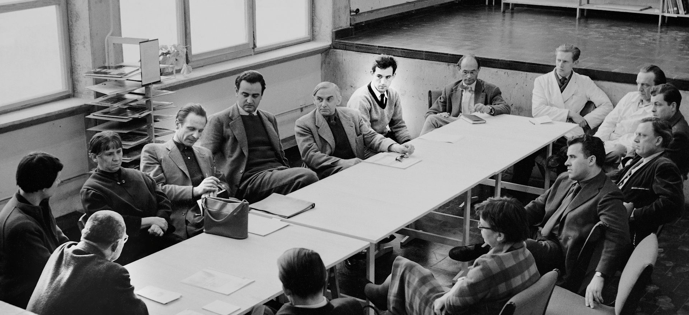
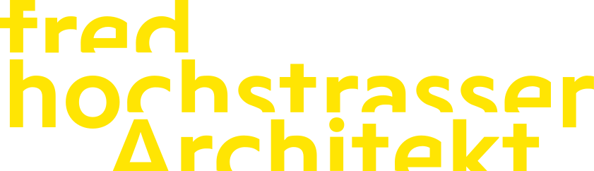
Ein Film von Sebastian Schradehit & run Film, Berlin 2025
Filmdokumentation über den Ulmer Architekten Fred Hochstrasser. Zeitzeugnis einer prägenden Persönlichkeit der Ulmer Architektur- und Designgeschichte.
architektur.
verantwortung.
lösungen.
Integraler Planungspartner aus Ulm.
Wir verbinden Architektur, Technik und Wirtschaftlichkeit zu einer integralen Planung.
Aktuelles
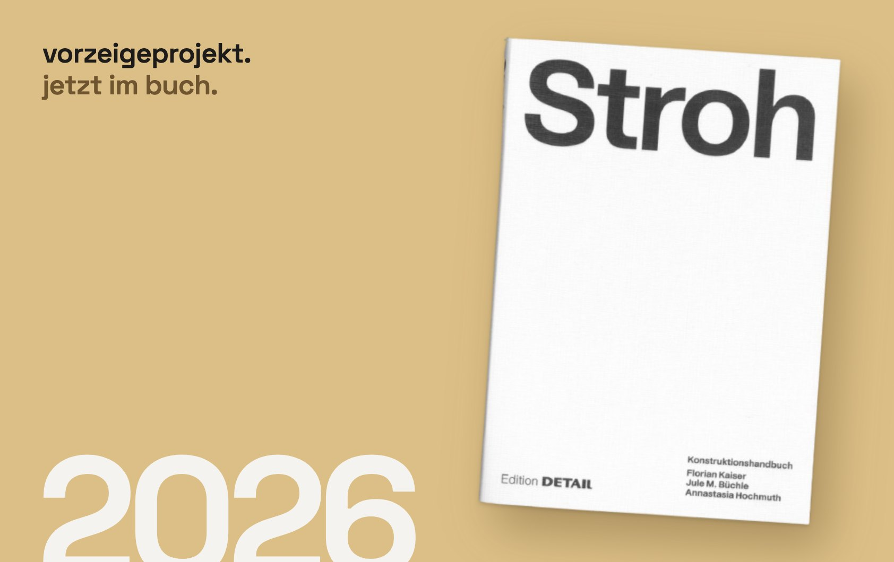
Wir planen nicht für die Planung.
Wir planen für Menschen, Unternehmen und Kommunen – mit dem Ziel, Projekte sicher, wirtschaftlich und nachhaltig zu realisieren. Zudem verbinden wir Architektur mit Fachdisziplinen wie Bauphysik und Brandschutz zu einem integralen Planungsprozess. Dadurch schaffen wir klare Verantwortlichkeiten, kurze Entscheidungswege sowie eine hohe Termin-, Kosten- und Planungssicherheit.
Projekte
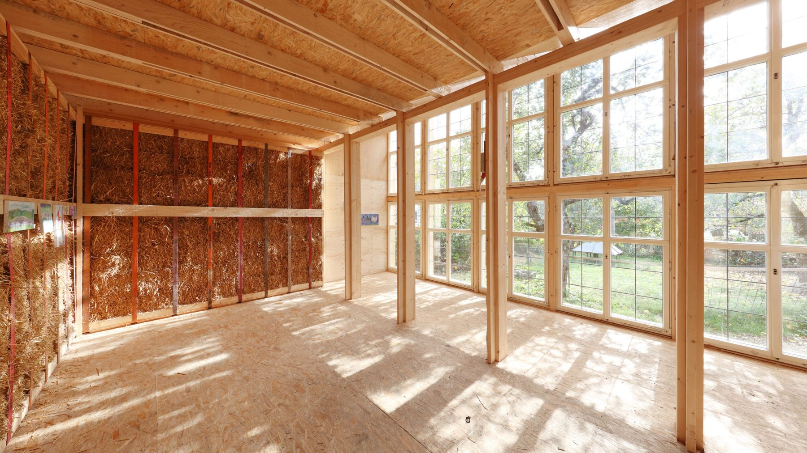
Hugo-Häring-Auszeichnung 2023
„Man fühlt sich, als betrete man eine Kathedrale.“
Dorothea Schrade, BauherrinGebaut an fünf Wochenenden, in Eigenleistung
Zum Projekthochstrasser.
35 Menschen. Ein Team. Eine Leidenschaft.
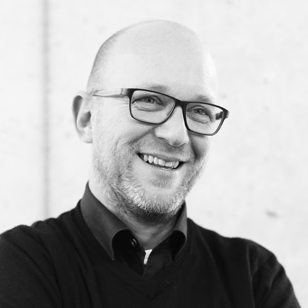
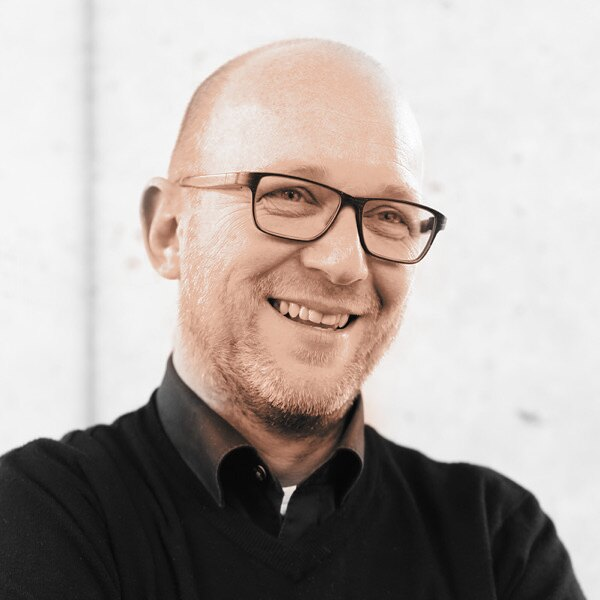
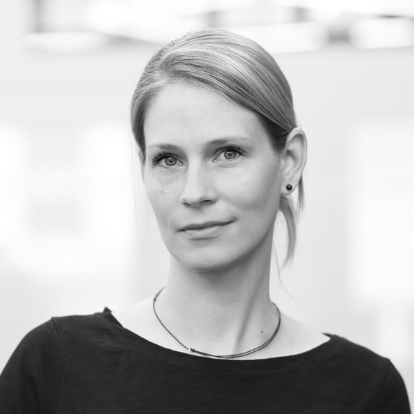
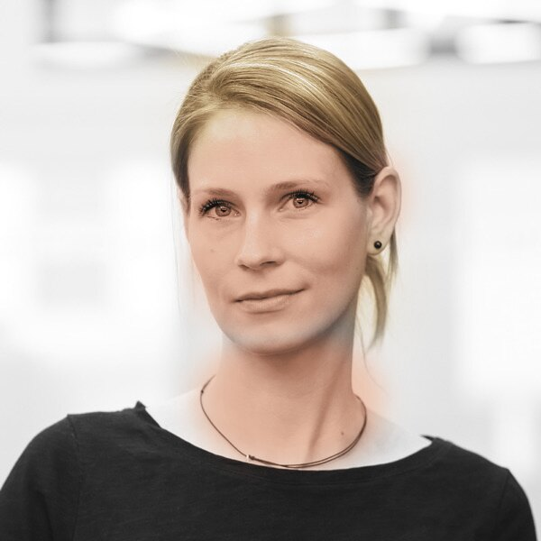

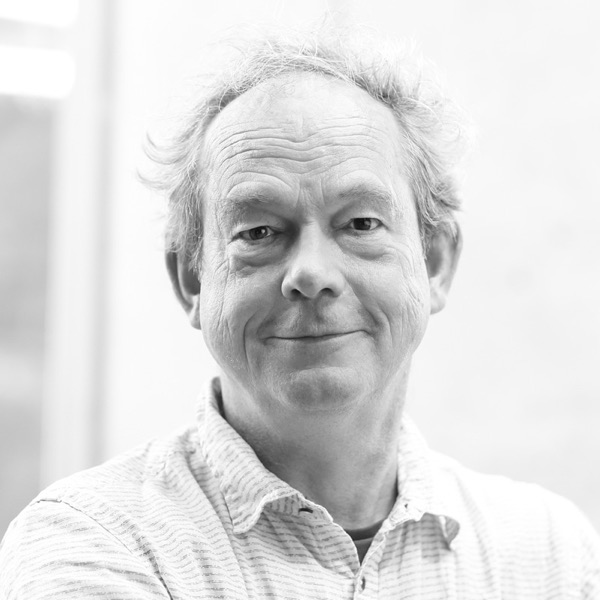
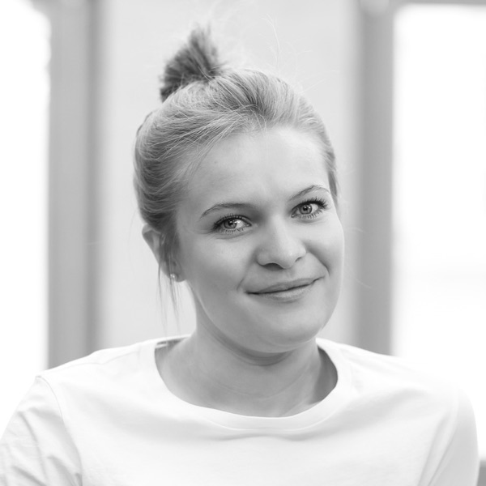
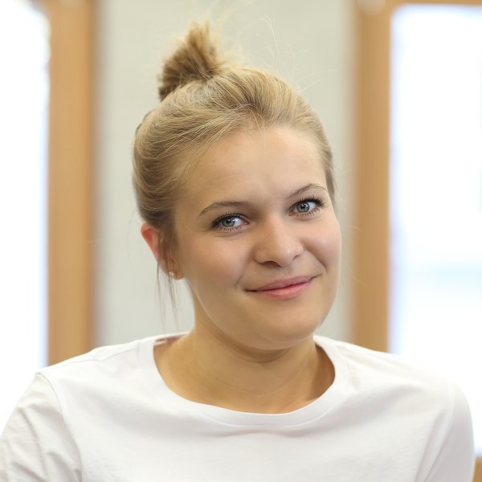
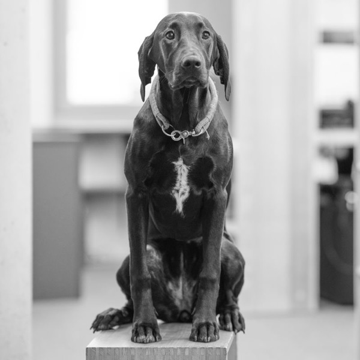
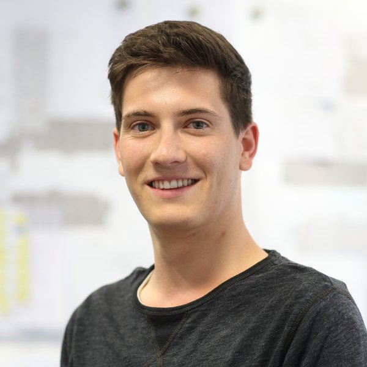
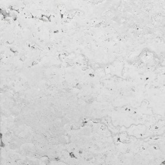
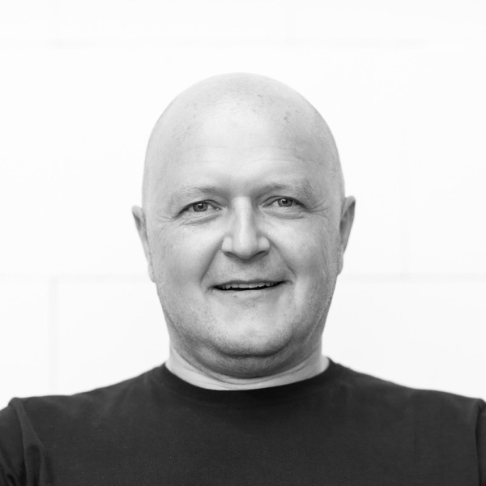
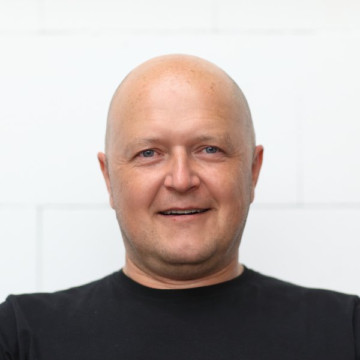
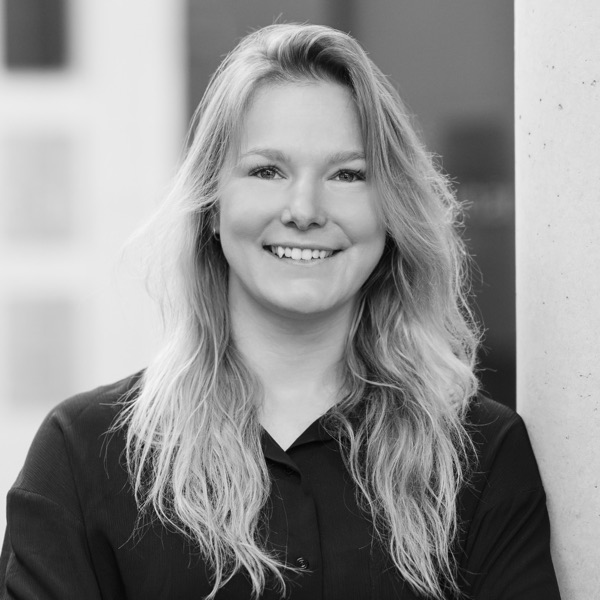
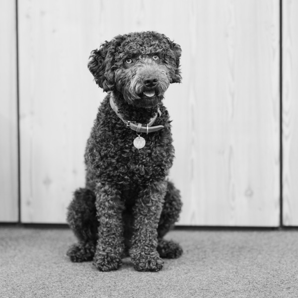
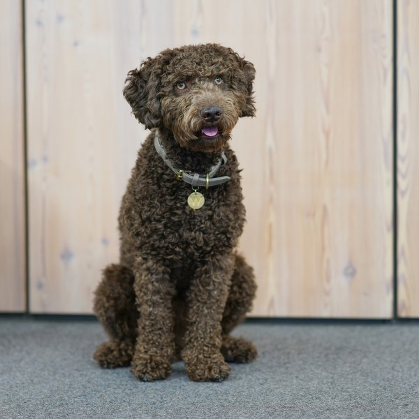
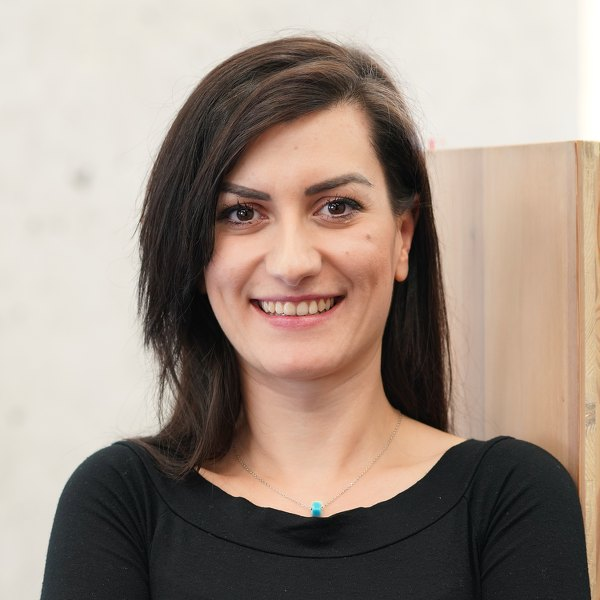
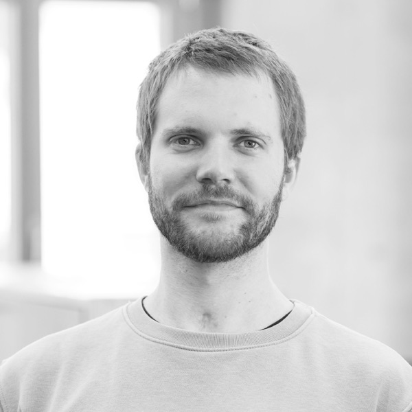
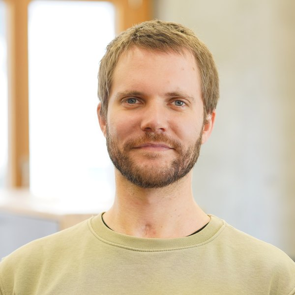
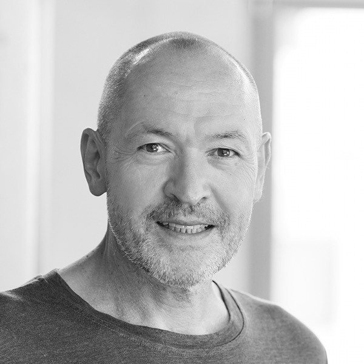
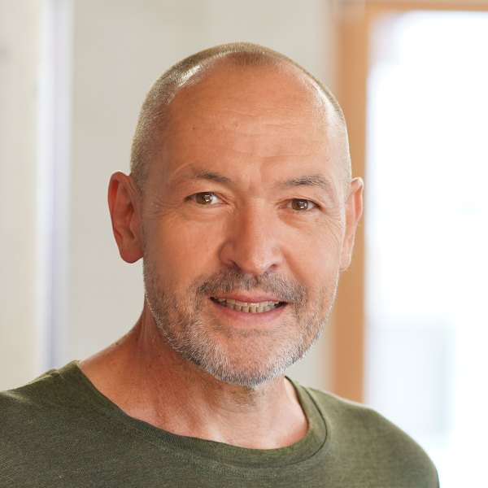
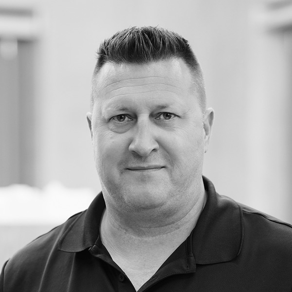
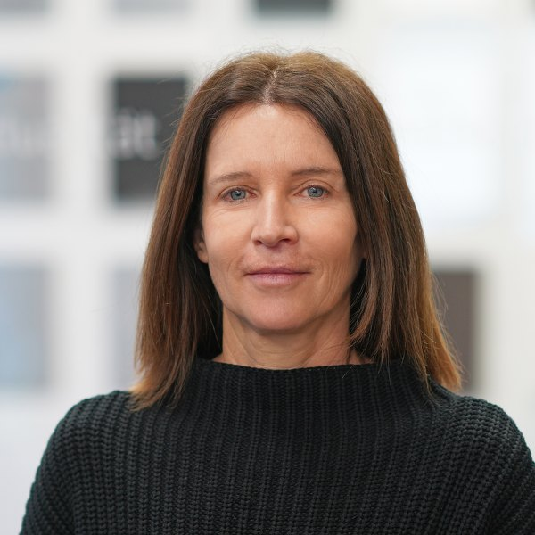